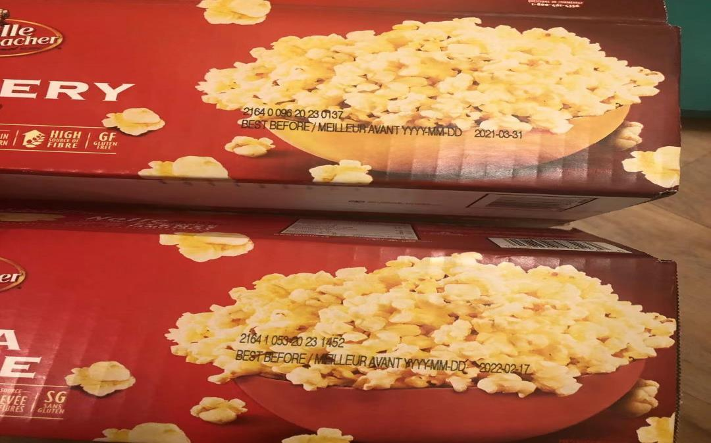
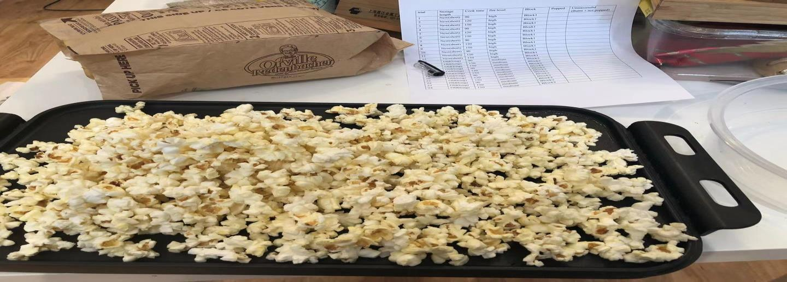
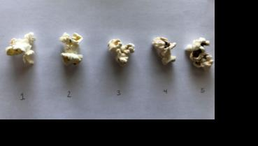
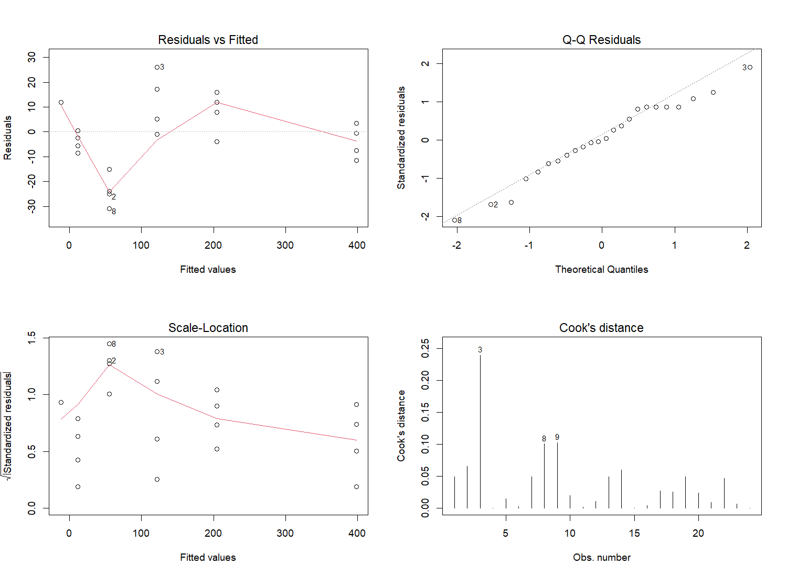

COMPARING STORAGE & FLAVOUR
Small kernels.
A better movie night.
What makes small kernels pop better?
Before the movie starts: does another half-minute make a better bag, or just a burnt one?
Two independent studies / Storage and flavour / Reproduced and extended
HIGH
Illustrated scene · not experimental footage
01 / TWO QUESTIONS BEFORE MOVIE NIGHT
Two questions. One better movie night.
Does an older bag still pop as well?
Compare New and Old bags at the same time and power. Then ask how the time–power interaction changes the result.
Does flavour change the yield?
Compare Butter and Salt in a separate study, controlling for time, power and microwave blocks.



02 / TRY IT AT THE COUNTER
Choose a setting. See what actually happened.
Choose a study and a tested setting. Make a guess, press start, and compare the historical bag averages. The heating scene plays in fast-forward.
Averages use only the selected study, across its blocks. Analytical filters below do not change this counter.
Icons illustrate categories, not actual counts or measured proportions. The animation does not simulate popping physics.
Why control the other variables?
To compare storage or flavour, hold time and power fixed. Blocks account for position in the storage study and microwave differences in the flavour study. Storage is also confounded with batch and packaging; the two studies cannot be pooled as one experiment.
SIDE BY SIDE / TWO QUESTIONS, TWO INDEPENDENT DATASETS
Hold the setting. Compare the groups.
Choose the same time and power for both studies, then compare groups within each study. Different microwaves, batches and measurement protocols make direct pooled estimates inappropriate.
02 / INTERACTIVE EXPERIMENT LAB
Make the evidence visible.
03 / OPTIMAL DESIGN EXPLORER
Find the best observed setting.
Explore only the tested combinations. Best means the best observed average under the current filters; it is not a universal cooking recommendation.
04 / MODEL & DIAGNOSTICS
Evidence, with assumptions.
View the ANOVA table and model specification
| Term | df | SS | MS | F | p |
|---|
Recomputed OLS, categorical time and fixed blocks; Type II ANOVA. Interpret main effects alongside interactions. No rows are removed for high Cook distance. Group and block filters affect descriptive views only. Excluding B-20 switches to a separately refitted sensitivity model.
Residuals vs. fitted
Normal Q–Q
FROM THE ORIGINAL R ANALYSIS TO NEW QUESTIONS
Reproduce first. Extend with care.
The analysis below belongs only to the 24-bag storage study B. Original R models are distinguished from new rate, uncertainty and sensitivity analyses. No new experimental observations were collected.
Successful counts are not taste scores. Storage comparisons do not establish equivalence, and a smooth mean model may miss curvature.
STORAGE STUDY B / REPRODUCED & EXTENDED
More time changes the story.
At High power, success drops as time increases. At Medium, it rises. Explore this interaction in the actual bags.
Success rate by time × power
Small points: individual bags. Solid lines: equal-bag means. Lines connect tested settings; intermediate times were not observed.
Why do observed and model rates differ?
The smooth quasibinomial model uses numeric time × power, storage and block. It predicts 95.01% at 90 s / High; the observed four-bag average is 93.27%. Its mean function misses some curvature. Model results below always use all 24 bags, regardless of these descriptive filters.
EXTENSION / UNCERTAINTY & VALIDATION
The best observed bag
is only the beginning.
Four bags support each time–power average. Keep the uncertainty and the model assumptions in view.
Observed vs. smooth model
Filled point: observed bag mean. Hollow point and line: smooth-model mean and conditional 95% interval, averaging equally over block and storage. All 24 bags. Intervals do not cover mean-model bias or future-bag variability.
The binomial variance scale
Extra variation makes simple binomial intervals too narrow. Quasi standard errors grow by about 1.97×, but this cannot fix mean-model bias.
A boundary, not certainty
Every 90 s / Medium bag recorded zero successes. The full categorical logit has a boundary estimate; ordinary coefficient intervals are unreliable.
Observed mean at 90 s / High
Reference bag-level 95% t interval: 91.12–95.42%. Across six settings, Bonferroni reference interval: 89.05–97.48%. Only four bags; exploratory.
What survived sensitivity checks?
90 s / High remains best when trial 20 is excluded, each block is fitted separately, and counts are hypothetically perturbed by up to 10% or 20%. Count perturbations are scenarios, not corrected observations. All 5,000 conditional coefficient draws select it; that frequency is not a probability of a universal optimum.
REPRODUCTION / ORIGINAL MODEL & NEW RATE MODEL
Fit the model. Test the assumptions.
Start with the successful counts.
Fit successful counts using cooking time, power and their interaction. Compare effects using regression and sequential ANOVA.
− 1191.5 × I(Medium)
+ 8.679167 × time × I(Medium)
High is the reference power. R² ≈ 0.990; residual df = 20. Sequential Type I ANOVA, matching the original R formula order.
Rates with honest assumptions.
Grouped successes and failures; numeric time × power, storage and fixed block. Nested F tests use the larger model’s Pearson dispersion.
Storage and position are not established as equivalent. Matched bag comparisons give uncertainty without treating each kernel as a separate experiment.
Inspect the reproduced model diagnostics
Inspect the diagnostics

05 / RESEARCH LIMITS
Good analysis knows its limits.
Measurement uncertainty
Manual counting and classification introduce measurement error. B-20 has an overwritten successful count, provisionally read as 40 and supported by archived data; its handwriting remains flagged.
Design limitations
New and Old differ in batch and packaging as well as storage. Each block–treatment cell has one bag. Flavour study A and storage study B have different conditions and remain separate.
Inference limitations
Small samples and exploratory selection limit generalization. Not significant does not mean equivalent. Yield counts are not taste scores; an independent follow-up experiment is still needed.
Storage study B: Yanqing Li, personal experiment (2021). Flavour study A: separate popcorn flavour study, used as a reference dataset and photo source. Reproduction and extensions: 2026. Source archives are retained locally; reports are not offered as downloads.
THE ORIGINAL OBSERVATIONS
Download the data. Check every bag.
Two separate CSV files, including every recorded bag. Downloads are complete datasets and do not change with the filters below.
UTF-8 CSV. Each file retains its own block and treatment labels. These are transcribed historical observations, not simulated data. The two studies are not pooled.
Every observation counts · selected study data
DATA / TRACEABILITY
Every observation counts.
Storage study · rates and reproduction data
STORAGE STUDY / BAG-LEVEL DATA
Explore every observation.
The storage-analysis filters above update this table. Explore the recorded successful and failed counts for each tested setting.